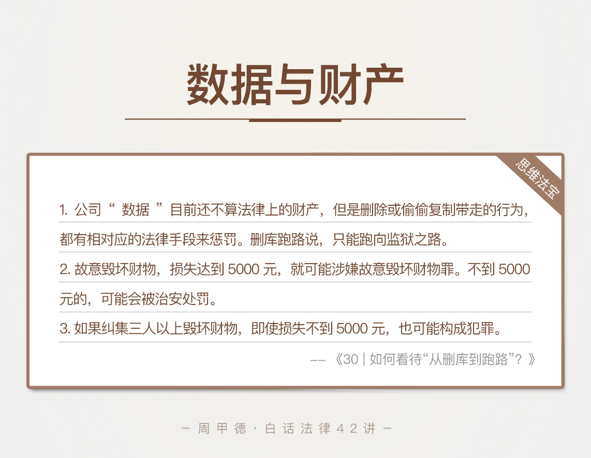

- 00 开篇词 这年头，你真应该懂点法律常识.md.html
- 01 “老周，我想知道” 常见法律认知盲区（一）.md.html
- 02 “老周，我想知道” 律师就在你身边（二）.md.html
- 03 “老周，我想知道” 律师就在你身边（三）.md.html
- 04 “老周，我想知道” 律师就在你身边（四）.md.html
- 05 创业未捷老板跑，社保工资哪里讨？.md.html
- 06 保密还是“卖身”，霸王条款怎么看？.md.html
- 07 编造流言蹭热度？看守所里降温度！.md.html
- 08 合同在手欠款难收，报警有用吗？.md.html
- 09 致创业：谁动了我的股权？.md.html
- 10 又见猝死！工“殇”究竟是不是工伤？.md.html
- 11 期权的“前世今生”.md.html
- 12 裁员面前，你能做的还有什么？.md.html
- 13 抄袭、盗图为什么做不得？.md.html
- 14 加班、工资、休假，你知道多少？.md.html
- 15 受贿原来这么“容易”.md.html
- 16 今天你用“VPN”了吗？.md.html
- 17 漏洞在眼前，可以悄悄破解吗？.md.html
- 18 “爬虫”真的合法吗？.md.html
- 19 非法集资到底是个啥？.md.html
- 20 黄色网站？不仅仅是“黄色”罪名.md.html
- 21 谁修改了我的积分资产？.md.html
- 22 外挂真能大吉大利吗？.md.html
- 23 如何看待“从删库到跑路”？.md.html
- 24 “伪基站”是你的避风港吗？.md.html
- 25 “网络诈骗”真的离你很远吗？.md.html
- 26 智斗中介：“北上广”租房图鉴.md.html
- 27 买买买！买房的“避坑”指南.md.html
- 28 闪婚又闪离，彩礼怎么理？.md.html
- 29 离婚还想和平？你要这么做.md.html
- 30 遗产继承的爱恨情仇.md.html
- 31 骗术升级？假结婚、假离婚的那些事儿.md.html
- 32 孩子学校受伤，谁之过？.md.html
- 33 如何让欠债还钱真正“天经地义”？.md.html
- 34 从透支到盗刷：人人须知的银行卡纠纷.md.html
- 35 远离“套路贷”的套路大全.md.html
- 36 危险！酒驾为什么被罚那么重？.md.html
- 37 老人倒地，“扶”“不服”？.md.html
- 38 “能动手就别吵吵”，代价你真的知道吗？.md.html
- 39 发生交通事故，如何处理？.md.html
- 40 交通事故综合法宝.md.html
- 41 婚姻家庭综合法宝.md.html
- 42 买卖房屋综合法宝.md.html
- 一键直达 法律专栏“食用”指南.md.html
- 加餐 “新冠肺炎”影响下，17个常见法律问题解答.md.html
- 结束语 法律，不会终止的篇章.md.html
- 捐赠
23 如何看待“从删库到跑路”？
“rm -rf /“应该是你非常熟悉的命令行，也是删库的罪魁祸首。“从删库到跑路”，大概是技术人，无人不知无人不晓的段子。你可能会心一笑，可能哈哈大笑，但是，这个几秒钟的简单操作，真的能像玩笑那么轻松吗？
当然不。你可能觉得这是玩笑，但是国外真有人这么干过。荷兰的一家云主机商Verelox，就曾经历过这样的惨剧，离职工程师把客户数据库给删了，公司几经修复，也不能恢复全部数据，最终造成了巨大的损失。
这种时候，删库，或者说删数据的行为，还是玩笑吗？当然不是，是犯罪呀！
国内也不缺这种不理智的人。新华社就报道了这么一个新闻，软件工程师小徐，离职后半年，公司仍然不给结清工资。小徐一气之下，利用自己当年开发网站写代码时留的一手——安插的后门文件，把程序的源码全给删了。又是一场几十万损失的灾难。
不管国外还是国内，这样的恶意删除数据的行为，毫无疑问，不仅仅是泄愤，更是刑事犯罪。犯的什么罪呢？破坏计算机信息系统罪。
因为这个罪名，我们在破解的文章里有详细讲到过，今天不再重复。我想重点讲的，是你可能会疑惑的一点，删除数据为什么不属于财产性犯罪，比如故意毁坏财物罪？
你可能觉得奇怪，数据对于公司来说有非常高的价值，甚至是公司的核心竞争力。破坏了公司的数据，基本就是破坏了公司的重要财产，为什么被定为破坏计算机信息系统罪呢？
其实，这还是因为，数据目前还不属于法律上承认的“财产”，前面我们讲到过，虚拟财产可以与货币兑换，所以属于法律上的财产。但数据本身并不能兑换货币，所以还不属于这个范围。
但是随着数据的价值越来越高，财产属性也确实在增强。起码在我看来，未来更健全的法制社会，一定会出台相关法律，承认数据的财产属性。那时候，再出现“删库事件”，估计就是故意毁坏财物罪了。
一直在提这个容易令人困惑的故意毁坏财物罪，我们也来简单了解一下。这类案例实在太多，比如说，你在离职前跟公司HR发生口角，然后动了手，顺手抡起椅子，砸了公司的六台电脑，可能就是故意毁坏财物罪了。
不过，这种罪名怎么界定呢？又会受到什么样的惩罚呢？
我们先来了解一下相关的法律知识。
故意毁坏财物罪
故意毁坏财物罪，非常容易理解，主要有这么几个要素：
主观上是故意或者恶意的；
行为上是毁灭或是损坏他人（公司或个人）的财物；
后果上是造成的损失数额较大，或者存在其他严重情节。
显然，这种罪往往是因为某些目的，想泄私愤、打击报复导致的。不过，这里要区分开，如果某人的目的是为了占有或盗窃，哪怕手段上可能损坏了财物，并不算是故意毁坏财物罪，而是要追究目的涉及的犯罪，比如侵占罪或盗窃罪。
另外，如果毁坏的是法律规定的一些特定财物，罪名可能会严重很多。比如，损坏了交通设备、电力煤气燃气、交通工具等的话，可能就是危害公共安全类的犯罪，后果很严重的直接就是死刑了。
最后，再来简单说一下，对于后果严重性的判断。
“数额较大”，是指造成5000元以上的损失，就可以追究刑事责任。其实还有一种“数额巨大”的情况，指的是造成5万元以上的损失，会被判3年以上7年以下有期徒刑。
“其他严重情节”，法律上明确规定的有这么几种：
三次以上毁坏财物的行为；
纠集三人以上，公然毁坏财物；
毁坏重要物品；
毁坏手段特别恶劣；
动机卑劣并嫁祸他人等等。
当然，你也不用担心坏人手段翻新来钻漏子。法律规定的是“其他严重情节”，这里我只是给出了一些典型例子，真正的法院，不会放过任何实质犯罪的行为。
再有，如果后果危害到了公共安全，可能也要追究危害公共安全的犯罪，比如放火、爆炸这些行为，判罪更重。
了解了“数额较大”和“其他严重情节”的具体含义，你可能会想，如果损失达不到5000元，还会受惩罚吗？
不幸地说，自然是会的。我国《治安管理处罚法》第四十九条就规定了，
盗窃、诈骗、哄抢、抢夺、敲诈勒索或者故意损毁公私财物，拘留5天到10天，并处五百元以下罚款；
情节较重的，拘留10到15天，并处一千元以下罚款。
请注意，这个规定并没有数额的要求，说白了，只要你有故意毁坏他人财物的行为，轻一点的会被拘留、罚款，重一点的就是蹲大牢了。
情景分析
回过头来看，我一开始举的砸电脑的例子。故意砸6台电脑，损失起码超过了5000元，如果损失不到5万元，可能被判3年以下有期徒刑或拘役。如果超过了5万元，3到7年等着你了。
其实现实中，这个罪名的大多数犯罪者，一开始都是弱势者的地位，但是因为缺乏对自己行为后果的认识，情绪失控下就做了不冷静的事情，往往也从法律的保护对象变成了惩罚对象。
这类人一般分两种，比较常见的是“维权派”。比如认为公司不地道的员工，再比如消费维权的例子，像是买房后因为质量问题，集体维权砸了售楼处的行为。这类往往是情急之下的行为，目的还是维护自己的权益，造成的后果也相对轻一些。
还有一种就是“报复派”。同样认为自己是受害者角色，但是他们不用法律、也不会直接去找人处理，而是经过缜密策划后，用比较卑劣的手段，达到打击报复的目的。这类人不仅仅想维权，更想报复、惩罚，所以造成的损失一般更大，惩罚也会更重一些。
还是那句话，冲动是魔鬼，理性和法律才是解决问题的更好方法。
思维法宝
最后，我们来总结一下本节内容。

第一，公司“数据”即使目前还不算法律上的财产，但是删除或偷偷复制带走的行为，都有相对应的法律手段来惩罚。删库跑路本就是说说罢了，不然的话只能跑向监狱之路。
第二，不管和公司发生矛盾，还是和个人发生矛盾，人身或者财产受到毁坏，都有严重后果。轻则民事赔偿、治安拘留，重则刑事犯罪、监狱伺候。
第三，故意毁坏财物，损失达到5000元，就可能涉嫌故意毁坏财物罪。如果纠集三人以上毁坏财物，即使损失不到5000元，也可能构成犯罪。
今天的内容主要是这些。欢迎留言分享你的经历和疑问，也欢迎把这篇文章分享给你的亲朋好友。冲动是魔鬼，不管对人对物都应该理性。
© 2019 - 2023 Liangliang Lee. Powered by gin and hexo-theme-book.